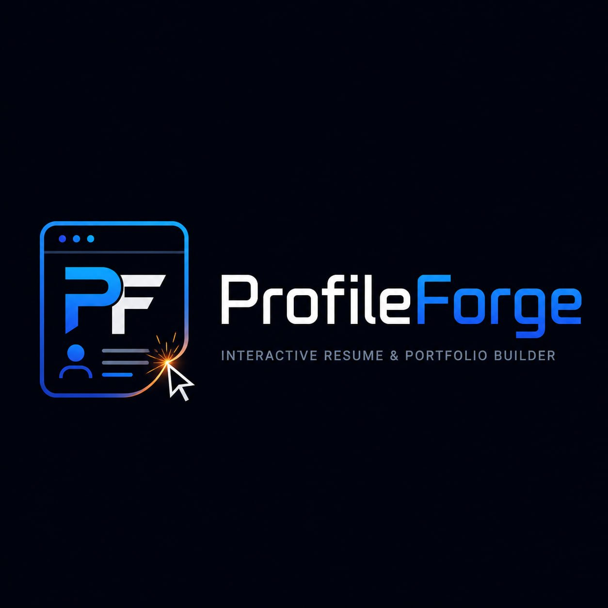
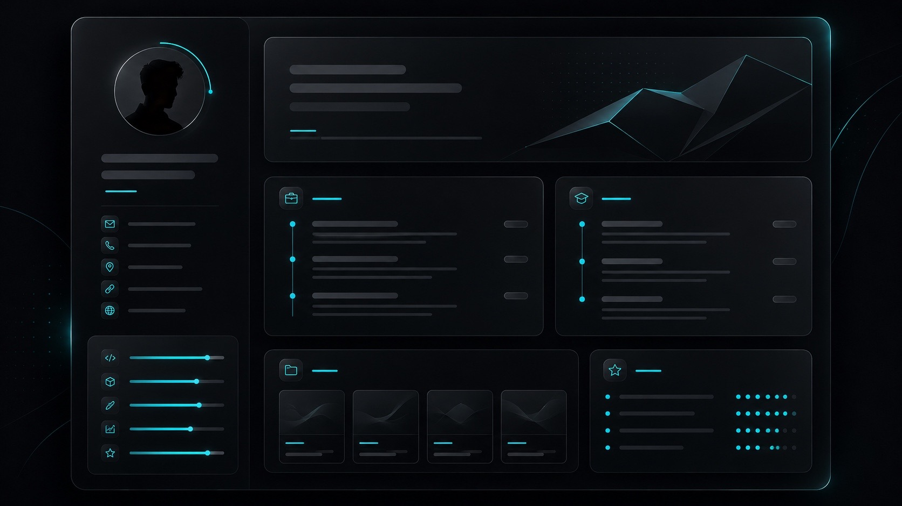
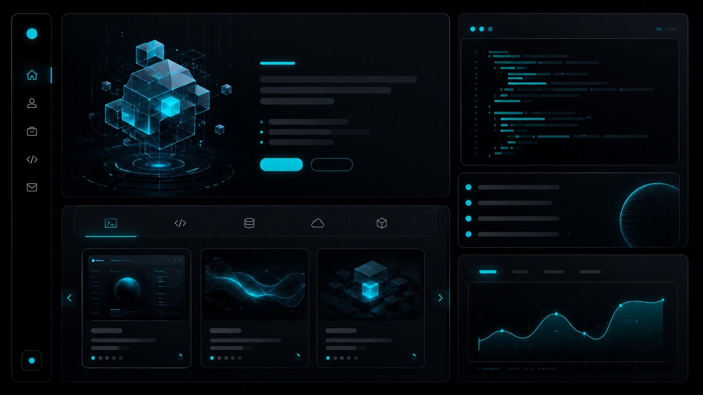
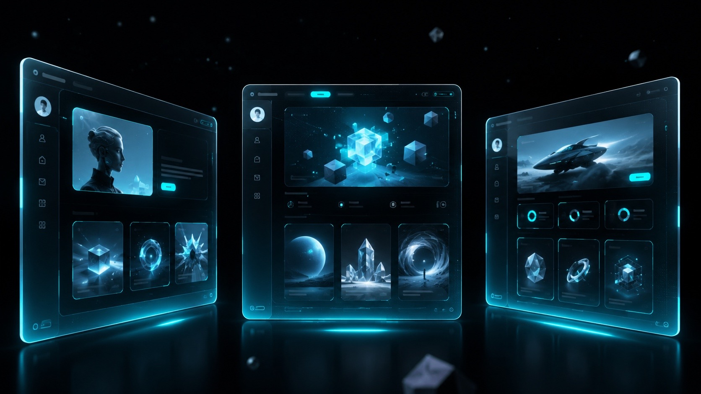

Проекты в один клик
Пользователь выбирает лучшие работы, а сервис оформляет их как понятные карточки.

ProfileForgeProfileForge собирает профиль, проекты и навыки в аккуратную публичную страницу. Без лишней верстки — одна ссылка для работодателя.
Пользователь выбирает лучшие работы, а сервис оформляет их как понятные карточки.
Технологии группируются в аккуратные блоки: frontend, backend, инструменты.
Готовую страницу можно отправить в отклике, резюме или сообщении HR.
Осталось выбрать оформление и проверить публичную страницу. Всё главное собрано в одном месте: статус, проекты, ссылка и активность.

Панель финансовой аналитики с графиками, фильтрами и сводкой расходов.
Сервис для онлайн-обучения с прогрессом, уроками и личным кабинетом.
Планировщик поездок с маршрутом, заметками и сохранением избранных мест.

Контрастная тема для IT-портфолио.
Спокойная подача без визуального шума.

Яркий стиль для публичной страницы.
Frontend-разработчик • UI Developer
Финансовая панель с графиками, фильтрами и виджетами.
Образовательная платформа с прогрессом и уроками.
Планировщик поездок с маршрутами и заметками.